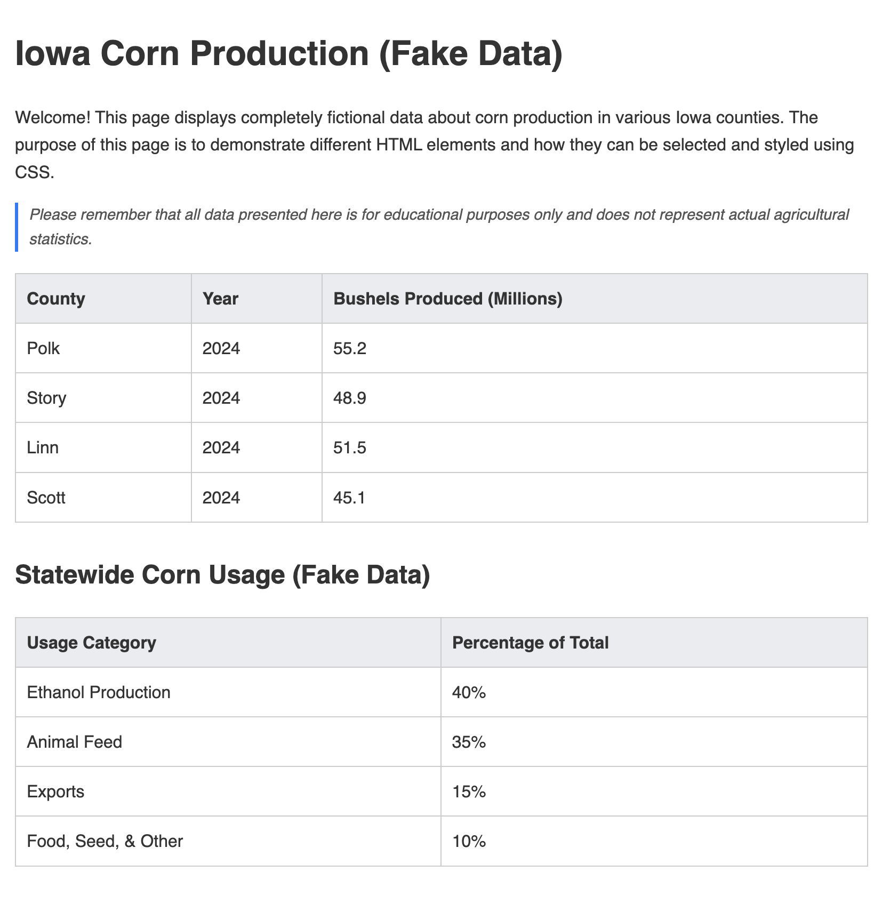
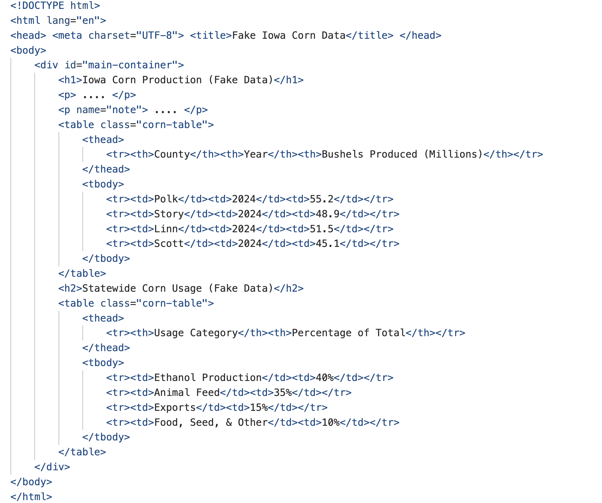
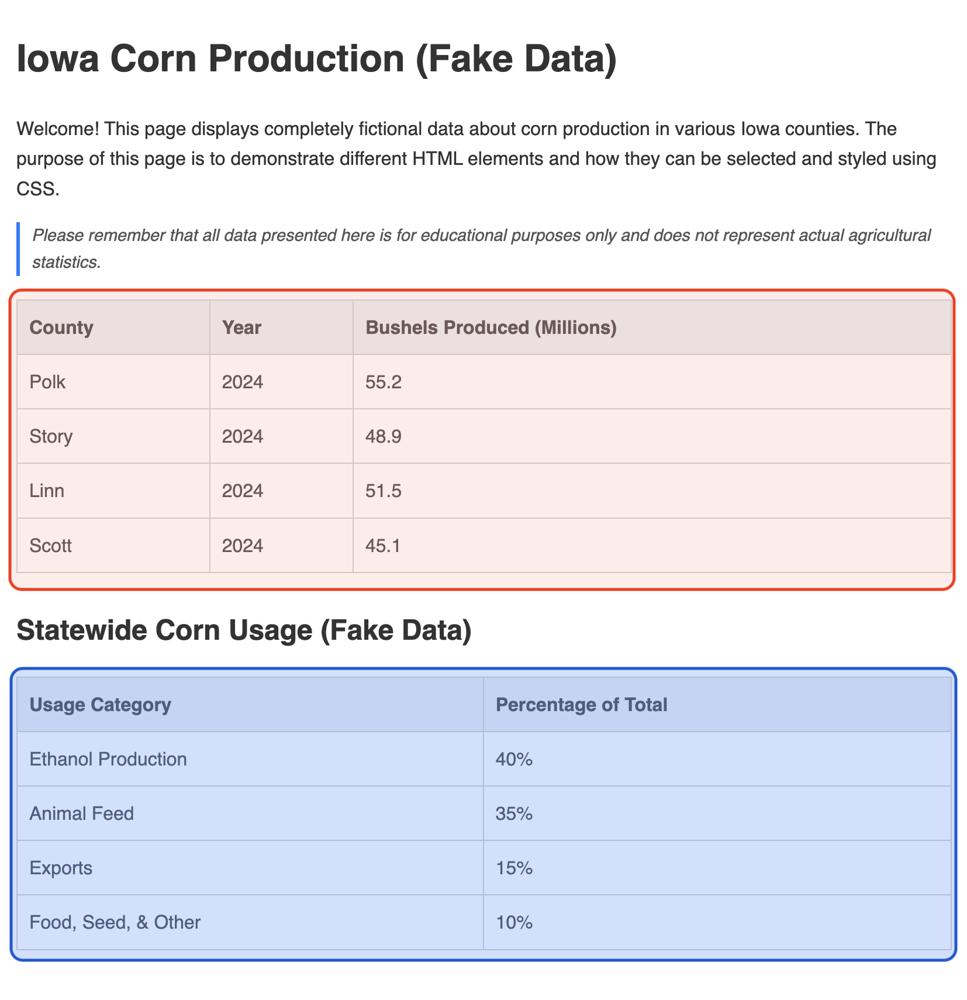
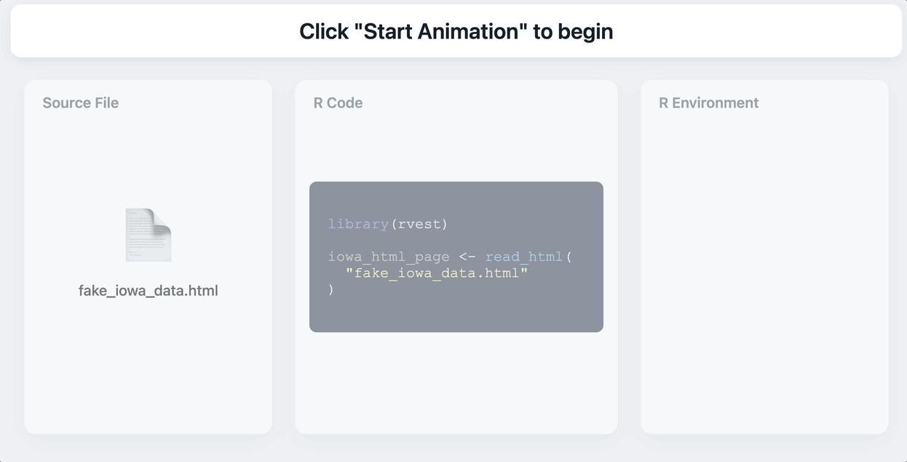
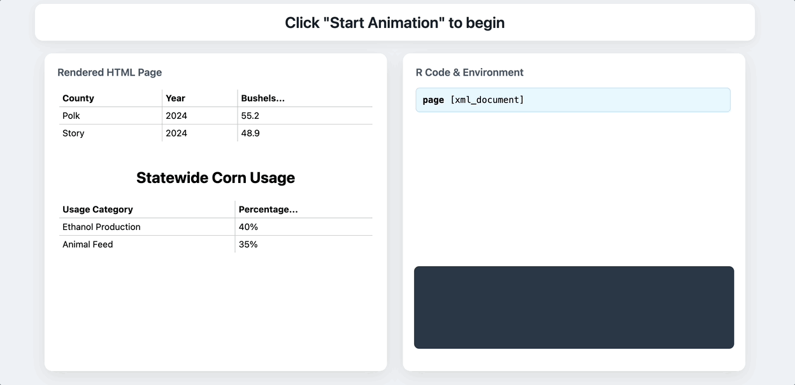
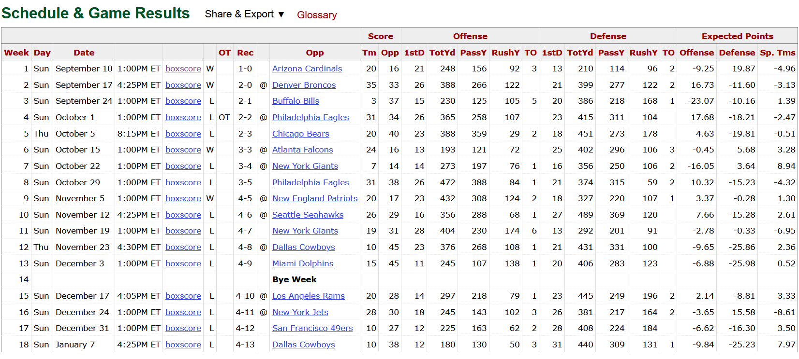

library(purrr)
library(tibble)
book_lst <- tibble(
title = c("The Hobbit", "Dune"),
details = list(
list(author = "Tolkien", year = 1937),
list(author = "Herbert", year = 1965)
)
)
book_lstSession 3: NFL Sports Data - Sports Reference Fill-In (EMPTY)
Session 3: Extracting data via Web Scraping
In the last section, we saw how APIs can provide clean, structured data directly from a server. However, not all information on the web is available through a dedicated API. In this section, we’ll pivot to web scraping, a powerful technique for extracting information directly from the HTML source code of a website that you see in your browser.
Unlike the neat JSON from an API, data on a webpage is often messy and designed for visual display, not easy analysis. This means web scraping is inseparable from data cleaning. The data we extract will frequently require us to wrangle it into a tidy, usable format, providing a great opportunity to practice and develop essential data manipulation skills.
Part 1. Goals & Objectives
- Review Important aspects in R: We are going to spend sometime reviewing basic components of the `tidyverse` and other related tools that are paramount to data cleaning.
- Deconstruct HTML Structure for Scraping: Identify and understand the role of fundamental HTML tags (
<table>,<tr>,<td>,<th>) within a live webpage’s source code to locate target data for extraction. - Extract Tabular Data Using
rvest: Use thervestpackage to read the HTML from a URL, select a specific table from the page, and convert it into a raw R data frame. - Perform Advanced Data Tidying and Transformation: Execute a multi-step data cleaning workflow on a messy, scraped data frame using packages like
janitoranddplyrto clean column names, remove irrelevant rows, and correctly parse data types. - Appreciate the “Brittleness” of Web Scrapers: Recognize why web scraping scripts can break over time due to changes in a website’s layout and understand the importance of writing adaptable and well-documented code.
Part 2. Conceptual Foundation
1. Review of Key Functions and Concepts
Of course. Here is a structured guide with concise explanations and sample data to effectively teach these R concepts for a web scraping workshop. The goal is to give attendees a clear understanding of what the code does without getting lost in details.
a) Extracting Items with pluck
Using the [[]] notation to extract information from a list can be hard to understand, especially teach.
pluck() from the purrr package is for safely pulling out a single piece of data from a list or a data frame column that contains lists.
Fake Data: Imagine you scraped data and have a list of authors for each book.
Code Demo: Let’s “pluck” the author from the first book’s details.
# Get the 'author' from the first element of the 'details' column
pluck(book_lst, "details", 1, "author")This is like telling R: go into book_data, find the details column, go to its first element, and grab the value named author.
b) Cleaning Data with janitor
The janitor package is your best friend for cleaning up messy data.
Fake Data: Data scraped from a website often has messy column names and extra empty spaces.
library(janitor)
messy_df <- data.frame(
`First Name` = c("gandalf", "frodo", NA),
`Last Name` = c("the grey", "baggins", NA),
`AGE` = c("2019", "50", NA)
)
messy_dfQuick Question: Why is this messy?
Code Demos:
clean_names()from thejanitorpackage makes column names neat and consistent (snake_case).
cleaned_df <- clean_names(messy_df)
colnames(cleaned_df)But still have not taken care of all the issues:
cleaned_dfremove_empty()gets rid of empty rows or columns.
# The third row is empty, so it gets removed
remove_empty(cleaned_df, which = "rows") adorn_totals()is powerful for quickly adding sums.
# Let's use a numeric data frame
sales_df <- data.frame(
product = c("A", "B"),
q1_sales = c(100, 200),
q2_sales = c(150, 250)) %>%
adorn_totals(where = "row")
sales_dfc) Simple Renaming with rename
The rename() function from dplyr is the most direct way to rename one or more specific columns. The pattern is always new_name = old_name.
Fake Data: Let’s use our cleaned data from before.
library(dplyr)
cleaned_dfCode Demo: Let’s change age to character_age.
cleaned_df %>%
rename(character_age = age)d) Advanced Renaming with rename_with
rename_with() is for changing many column names at once using a pattern. It’s perfect when you want to apply the same rule to multiple columns.
Fake Data: Imagine your scraped data has a weird prefix on several columns.
with_prefix_df <- data.frame(
`_name` = c("Aragorn", "Legolas"),
`_race` = c("Human", "Elf"),
`id` = c(1, 2)
)Code Demo: Let’s remove the leading underscore _ from every column that starts with one.
library(stringr)
with_prefix_df %>%
rename_with(~ str_replace(., "^_", ""), .cols = starts_with("_")) %>%
colnames()rename_with(...): “I want to rename some columns.”~ str_replace(., "^_", ""): The rule is to replace a^(start of the text) followed by_with nothing (""). The.is a placeholder for the column name..cols = starts_with("_"): “Only apply this rule to columns that start with_.”
e) Selecting Columns with ! and :
You can use select() from dplyr to keep or remove columns.
:(colon) selects a range of columns.!(bang) removes a column.
Fake Data:
character_stats_df <- data.frame(
name = c("Gimli", "Samwise"),
race = c("Dwarf", "Hobbit"),
weapon = c("Axe", "Frying Pan"),
age = c(139, 33)
)Code Demos:
- Select all columns FROM ‘race’ TO ‘weapon’
character_stats_df %>%
select(race:weapon)- Select everything EXCEPT the ‘age’ column
character_stats_df %>%
select(!age)f) Understanding Regular Expressions (regex)
A regular expression (or regex) is a pattern used to find and match text. It looks weird, but it’s just a set of rules.
Let’s break down this regex for finding numbers: ^\\s*-?\\d*\\.?\\d+\\s*$
| Part | Meaning | Example Matches |
|---|---|---|
^ |
Start of the string | |
\\s* |
Zero or more whitespace characters (\s) |
(space) |
-? |
An optional hyphen (-) |
- |
\\d* |
Zero or more digits (\d) |
123, `` |
\\.? |
An optional literal dot (`.`) | `.` |
| `\d+` | One or more digits (`\d`) | `45`, `6` |
| `\s*` | Zero or more whitespace characters | ` ` (space) |
| `$` | End of the string |
In English: This pattern looks for strings that start (^), might have some spaces (\s*), might have a minus sign (-?), might have some digits (\d*), might have a decimal point (\.?), must have at least one digit (\d+), might have more spaces (\s*), and then must end ($).
This pattern will match "5", " -10.5 ", and ".5" but will not match "5a", "-$5", or "1.2.3".
g) across() for Mass Changes
across() is a super-powerful dplyr function that lets you apply the same operation to multiple columns at once. It’s almost always used inside mutate().
Fake Data: Scraped data often reads numbers as text.
scraped_measurements_df <- data.frame(
id = c("A", "B", "C"),
width = c("10.5", "8", "9.1"),
height = c(" 5.2 ", "-3", "7.7"),
comment = c("ok", "good", "perfect")
)Code Demo: Let’s convert every column that looks like a number into an actual numeric type. We’ll use the regex from before.
numeric_scraped_measurements_df <- scraped_measurements_df %>%
mutate(across(where(~ all(grepl("^\\s*-?\\d*\\.?\\d+\\s*$", .x))), ~ as.numeric(.)))
str(numeric_scraped_measurements_df)mutate(across(...)): We are changing columns.where(~ all(grepl(...))): This part selects the columns. It tests every column (where) to see if (~) all of its values match (grepl) our numericregexpattern. It findswidthandheight.~ as.numeric(.): This part is the action. It takes the selected columns (.) and applies theas.numericfunction to them.
h) Conditional Logic with case_when
case_when() is for creating a new column based on a set of if/then rules. It’s much easier to read than nested ifelse() statements. The syntax is condition ~ value.
Fake Data: Let’s use the numeric data we just created.
numeric_scraped_measurements_dfCode Demo: Let’s create a size_category based on the width column.
numeric_scraped_measurements_df %>%
mutate(
size_category = case_when(
width >= 10 ~ "Large",
width >= 9 ~ "Medium",
TRUE ~ "Small"
)
)case_when()checks each rule in order. The first one that isTRUEwins.width >= 10 ~ "Large": If width is 10 or more, the value is “Large”.width >= 9 ~ "Medium": If not, but width is 9 or more, it’s “Medium”.TRUE ~ "Small": This is the catch-all. If none of the above rules were met, the value is “Small”.TRUEalways evaluates to true, so it works like anelsestatement.
####———————
Q1.
(Multiple Choice): After scraping a table, you find that the column names are messy and contain spaces, like "First Name" and "Pts/Game". Which function from the janitor package is specifically designed to standardize these into a clean, usable format like first_name and pts_per_game?
remove_empty()adorn_totals()rename_with()clean_names()
####———————
2. HTML Concepts
a) How HTML Builds a Web Page
To understand web scraping, we first need to see how a web browser reads HTML code to display a page.
i. The Rendered Page (What You See)
This is the final, visual webpage that you interact with in a browser. It’s designed to be human-readable.

ii. The HTML Code (What the Computer Sees)
Behind every webpage is the raw HTML code. This code acts as the blueprint, telling the browser what content to display and how to structure it.

####———————
Q2.
(Open-Ended): What is the fundamental relationship between the visual webpage you see rendered in your browser and the HTML source code? Why must our web scraping tools work with the HTML code?
####———————
b) Finding a Specific Element: The Table
Let’s focus on a specific part of the page: the data tables.
i. The Tables on the Rendered Page
When we scrape, our goal is to extract specific information, like the data in these two tables.

Q3.
(Discussion): If a webpage contains multiple tables (e.g., one for regular-season stats and one for playoff stats), how does rvest initially handle this? How do we then select only the specific table we want?
####———————
c) Anatomy of an HTML Table
An HTML table is built from a set of nested tags that define its structure and content.
<table></table>This tag is the main container that wraps around all the content for an entire table.<thead></thead>This tag defines the header section of a table, where you place the row containing the column titles.<th></th>A table header cell, used for column titles. Text inside a<th>tag is typically bold and centered by default.<tr></tr>A table row, which groups together all the cells (<th>or<td>) that belong in a single horizontal line.<td></td>A table data cell, which contains the individual pieces of data in the table’s body.
####———————
Q4.
(Multiple Choice): In the anatomy of an HTML table, which tag is used to define a single table header cell, typically used for a column title?
<td><tr><th><thead>
####———————
3. Desired rvest functions
a): Reading the HTML File
First, we load our libraries and read the HTML file into an R object. This step remains the same.

Let’s do it!
## EMPTY VERSION
# library(_____)
# library(_____)
# library(_____)
#
#
# # Read the local HTML file into an R object
# iowa_html_page <- _____("sessions","session_3","fake_iowa_data.html") %>%
# read_*()b) Extracting the First Table with pluck()
Instead of using [[1]], we can pipe the output of html_table() directly into pluck(). We tell pluck() to retrieve the first element from the list of tables.
## EMPTY VERSION
## Use pluck() to get the first table from the list
# usage_df <- iowa_html_page %>%
# html_*() %>%
# _____(____)
#
# usage_dfc) Extracting the Second Table with pluck()
We can use the exact same process to get the second table. We simply change the index in pluck() from 1 to 2 to retrieve the second element from the list.
## EMPTY VERSION
## Use pluck() to get the second table
# usage_df <- iowa_html_page %>%
# html_*() %>%
# _____(____)
#
# usage_df
####———————
Q5.
(Open-Ended): Why does the html_table() function in rvest return a list of data frames instead of just a single data frame? How does this make pluck() a particularly useful function?
####———————
4. Extract NFL Data
Let’s go to this html page. [HUGE!!!!!!, Always go!]
Our desired table is the 2023 Regular Season Table for the Washington Commanders, which is the second table on the webpage.

a) Step 1: Retrieve the Game Data
First, we define our parameters (team and year), build the full URL, read the HTML from the page, and then use rvest and purrr to extract the specific table containing the game data we want.
## EMPTY VERSION
# library(httr2)
# library(rvest)
# library(glue)
# library(purrr)
#
# # Define team and year
# team_name <- "____"
# year <- ____
#
# # Construct full URL
# generic_url <- glue("https://www.pro-football-reference.com/teams/{____}/{____}.htm#all_games")
#
# # Read HTML page and extract tables
# webpage <- read_html(____)
# web_tables <- html_table(____)
#
# # Pluck the second table (regular season games)
# game_table <- pluck(____, ____)Look at the column names
b) Step 2: Clean the Column Headers
Scraped tables often have messy headers. The first row of this table contains the real column names. We will extract that row, set it as the new headers, remove the now-redundant first row, and finally use the janitor package to standardize the names into a clean format.
Note: Sometimes we have to refer to base R syntax (like colnames() and [-1,]) because modern tidyverse methods may not be the most direct tool for a specific, low-level task like this.
[[REALLY SLOW]]
## EMPTY VERSION
## Use first row as column names
# firstrow_names <- ____[1, ] %>%
# unlist() %>%
# as.character()## EMPTY VERSION
## Assign as column names
# colnames(____) <- ____## EMPTY VERSION
## Remove the first row and clean names
# table_1 <- ____[-1, ]
# table_2 <- clean__names(____)c) Step 3: Tidy and Transform the Data
The final step is to reshape the data into a truly usable format. This involves renaming poorly named columns, removing irrelevant columns and bye weeks, converting columns that look like numbers from text to numeric, and correctly setting categorical variables (factors).
## EMPTY VERSION
# library(dplyr)
# library(stringr)
#
## Rename, select, and filter
# table_4 <- table_2 %>%
# rename(
# result = ____,
# game_location = ____
# ) %>%
# select(!(____:____)) %>%
# filter(opp != "____")## EMPTY VERSION
## Convert types
# table_6 <- table_4 %>%
# mutate(across(where(~ all(grepl("^\\s*-?\\d*\\.?\\d+\\s*$", .x))), ~ as.numeric(.))) %>%
# mutate(
# result = as.factor(____),
# game_location = case_when(
# game_location == "@" ~ "____",
# game_location == "" ~ "____",
# TRUE ~ ____
# ) %>% as.factor()
# )## EMPTY VERSION
## Final column name cleanup
# final_games_df <- table_6 %>%
# rename_with(~ str_replace(., "^_", ""), .cols = starts_with("____"))####———————
Q6.
(Discussion): Compare the multi-step cleaning process for the scraped NFL table with the process for the OpenWeather API data in Session 2. What does this difference demonstrate about the “data cleaning tax” associated with web scraping? 💸
####———————
Part 3. Hands on Activities
GENERAL INSRUCTIONS
Read the following instructions and complete the activity
In this activity, we will perform a more advanced web scraping task. We will extract the complete historical season data for the Iowa State Cyclones, clean up the messy table, and create a visualization showing the team’s number of wins per year throughout its history.
Hands Activity 1: Scrape Historical Season Data
Our first step is to use rvest to pull the main history table from the Iowa State Cyclones page on Sports-Reference. This table is more complex than our previous examples because it contains repeating header rows inside its body that we will need to clean up later. We will use the table’s unique CSS ID (#history) to select it precisely.
## EMPTY VERSION
## Load necessary libraries
# library(rvest)
# library(dplyr)
#
# # Define the URL for the Iowa State football history page
# url <- "____"
#
# # Read the HTML and select the table by its ID
# raw_history_df <- read_html(____) %>%
# html_element("____") %>%
# html_table()
#
# # View the first few rows to see the raw data
# head(raw_history_df)What is wrong with this data frame?
Hands Activity 2: Clean and Prepare the Data
The raw data we scraped is not yet ready for analysis. We need to perform two key cleaning steps. First, we’ll remove the repeating header rows, which we can identify because their “Year” column is not a number. Second, we’ll convert the columns for year, wins (W), and losses (L) into a numeric format so we can use them in our plot.
## EMPTY VERSION
## Use first row as column names
# firstrow_names <- ____[1, ] %>%
# ____() %>%
# ____()## EMPTY VERSION
## Assign as column names
# ____(raw_history_df) <- ____## EMPTY VERSION
# library(____)
# ## Remove the first row and clean names
# history_df <- raw_history_df %>%
# ____() %>% # Clean column names first
# filter(____ != "Rk" ) %>%
# mutate(across(where(~ all(grepl("^\\s*-?\\d*\\.?\\d+\\s*$", .x))), ~ ____(.))) # Convert columns to numericHands Activity 3: Visualize Wins Over Time
Now that our data is clean and properly formatted, we can create a visualization. We will use ggplot2 to plot the number of wins (w) for each year in the dataset. This line chart will give us a clear view of the football program’s performance over its entire history.
## EMPTY VERSION
## Load ggplot2 for plotting
# library(ggplot2)
#
## Create a line chart of wins per year
# ggplot(data = ____, aes(x = ____, y = ____)) +
# geom_line(color = "#C8102E", size = 1) +
# geom_point(color = "#F1BE48", size = 3)) +
# labs(
# title = "Iowa State Football Wins Per Season",
# subtitle = "Data scraped from Sports-Reference.com",
# x = "Season Year",
# y = "Number of Wins"
# ) +
# theme_minimal() +
# theme(plot.title = element_text(hjust = 0.5),
# plot.subtitle = element_text(hjust = 0.5))Part 4. Reflection
This session described web scrapers as being “brittle.” Based on the NFL example, what do you think this means? What could cause your working script to fail a month from now, even without changing your code?
Now that you have experience with both methods, describe a scenario where you might choose to scrape a website even if a related API was available. (Hint: Think about cost, API rate limits, or the specific data available).
It’s often said that data science is 80% data cleaning and 20% analysis. How did the NFL scraping example in this session support or challenge that idea for you?
Web scraping, especially at a large scale, can put a heavy load on a website’s server. What are some “good citizen” practices you should follow when scraping a site to be respectful and avoid getting your IP address blocked?